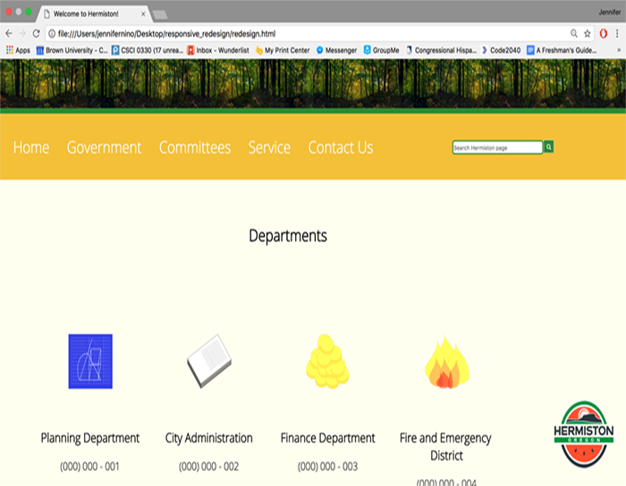

The purpose of this project was to select a lacking interface, redesign it, and make a responsive page for it.
The website I chose was a city website, which lacked in a lot of areas. Immediately, I was able to identify weak points. This included: Too much text, confusing layout and lots of repition.
Next, I selected 5 different screens from this site, and redesigned the site. I made wireframes and explained the different redesign decisions I made and why.
I improved my readability by shortening the amount of content, using a thinner/more-readable font, and decreasing the number of menus. I employed a grid by dividing the page into seperate containers and clearly making divisions among the site to make it more readable. I also changed the color palette to warmer colors. I chose the color palette from the ones Adobe Illustrator has available. Everything below the menu is formatted in such a way that creates a steady flow, which the user can use to read the information on the site easier.
